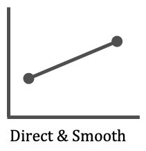
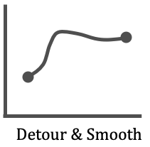

Note: Please ‘accept’ this HIT only if you have access to a laptop or desktop with internal or external
speakers or headphones and if you are using Chrome or Firefox browser. This HIT involves listening and
evaluating audio clips.
Project Details:
The purpose of this research is to evaluate the quality of synthetic audio clips generated using an
artificial neural network. The audio clips under test belong to the domain of audio textures (for e.g. a
series of popping sounds, the ticking sound made by a Geiger counter or the sound made by water filling
a container) or pitches made by musical instruments. The specific goal of this project is to ensure that
the synthetic outputs generated by these deep learning models are validated by human beings to test for
certain sound qualities like smoothness, naturalness or absence of noise etc.
Consent:
Before working on this HIT, please read the consent details on the 'View Consent Details' section of the
HIT page.
By accepting this HIT on Mechanical Turk, you will be indicating your consent to
participating in our study
as per the details outlined the consent details section.
Task Instructions:
In this task you will be presented with two audio clips. While both clips start at one sound (like
sound of a Clarinet) and end at another sound (like sound of a Trumpet), they use two different
algorithms to build the transition from the starting sound (Clarinet) to its ending (Trumpet).
You are also provided with 4 visual options of how you think the sound transitions or morphs from one end
point to the other.
Direct & Smooth transition or morph: The transition from, say a Clarinet to a sound
made by Trumpet, happens monotonously or in a straight line with slight or no variation.

Detour & Smooth transition or morph: The transition from, say a Clarinet to a sound
made by Trumpet, happens via another instrument, like say a Flute. You will hear a different pitch in
between the clip before the transition completes to Trumpet.

After you finish selecting an option you will need to submit the HIT.
For any questions:
Please use the ‘Contact this requester’ link on the HIT details if you need further details or
clarifications on the task. The Principal Investigator (the person in charge of this research) or
his/her
representative will describe this research to you and answer all of your questions.
Note: On using this
feature, your e-mail address and your name will automatically be visible to our research team so that we
can reply to you.
Please see summary tab for all instructions.
Example
This section shows two clips as you will see on the HIT page. Please listen to both clips.
The starting points for both clips is a pitch played on a Clarinet. Both clips end on a pitch played by a
trumpet.
In this case, Clip 2 is more smooth in transitioning from its starting point to its end.
Notice that Clip 1 stays at the Clarinet pitch (starting point pitch) for lot longer than Clip 2.